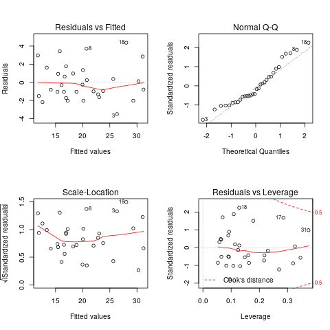

Better mpg: manual or automatic transmission?
Table of Contents
Introduction
In this report, we will analysis the mtcars data set to answer:
- Is an automatic or manual transmission better for MPG?
- Quantify the MPG difference between automatic and manual transmissions?
Preproces and Explore the data
We use categorical variable to denote:
- vs ~ the engine type
- am ~ whether manual or automatic
library(ggplot2); library(GGally); library(dplyr, warn.conflicts=FALSE); data(mtcars) raw_data <- mtcars processed_data <- mutate(mtcars, am = factor(ifelse(am == 0, "automatic", "manual")), vs = factor(ifelse(vs == 0, "v", "s")))
We use ggpairs to explore relation bewtten mpg and am. The first figure in Appendix shown that: manual cars seems have a better mpg than automatic ones.
Regression Analysis
Previous figure only shows the relationship between mpg and am, other feature are ignored. In this section, we will use linear regression model to answer the target question.
We will use step() to choose the model by AIC in a stepwise algorithm, which suggests using wt, am and qsec.
model <- step(lm(mpg ~ ., processed_data), trace=FALSE) coefficients(model)
(Intercept) wt qsec ammanual 9.617781 -3.916504 1.225886 2.935837
Add the inteaction terms (all wt:qsec, wt:am, qsec:am are tried, based on p-value and adjusted \(R^2\), am:wt is used.):
final_model <- lm(mpg ~ wt + am + qsec + am:wt, processed_data)
coefficients(final_model)
confint(final_model)
(Intercept) wt ammanual qsec wt:ammanual
9.723053 -2.936531 14.079428 1.016974 -4.141376
2.5 % 97.5 %
(Intercept) -2.3807791 21.826884
wt -4.3031019 -1.569960
ammanual 7.0308746 21.127981
qsec 0.4998811 1.534066
wt:ammanual -6.5970316 -1.685721
Since the 95% confidence interval of intercept contains zero(large p value), we are not able to reject \(H_{NULL}: \beta_0=0\). So the final model is given by:
\begin{equation} mpg = -2.937 wt + 1.017 qsec + (14.079 - 4.141 wt) am_{manual} \end{equation}And the anova() shows the prediction is improved by the final model.
anova(model, final_model)
Analysis of Variance Table Model 1: mpg ~ wt + qsec + am Model 2: mpg ~ wt + am + qsec + am:wt Res.Df RSS Df Sum of Sq F Pr(>F) 1 28 169.29 2 27 117.28 1 52.01 11.974 0.001809 ** --- Signif. codes: 0 ‘***’ 0.001 ‘**’ 0.01 ‘*’ 0.05 ‘.’ 0.1 ‘ ’ 1
The residual plot and diagnostics are given in appendix.
Conclusion
From previous model, for fixed values of \(wt\) and \(qsec\), the average difference of mpg is given by:
\begin{equation} mpg_{manual} - mpg_{automatic} = 14.079 - 4.141 wt = \begin{cases} >0 & \mbox{if } wt \leq 3.40 \\ <0 & \mbox{if } wt >3.40 \end{cases} \end{equation}Thus, the answer of the target quesition can't be answered directly, it dpends on \(wt, qsec\).
Appendix
Scatter plot matrix
library(GGally); library(dplyr, warn.conflicts=FALSE); options(warn=-1) ggpairs(dplyr::select(processed_data, mpg, am, wt, qsec), color='am')
Diagnostic
par(mfrow = c(2, 2)) plot(final_model)

Summary of two linear models
summary(model) summary(final_model)